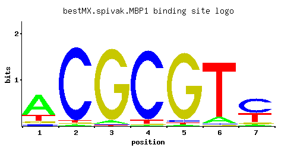

MBP1
YDL056W
Transcription factor involved in regulation of cell cycle progression from G1 to S phase, forms a complex with Swi6p that binds to MluI cell cycle box regulatory element in promoters of DNA synthesis genes
Best-performing DNA-binding model.

View and copy the recommended matrices ↘
A | 0.677 0.012 0.039 0.005 0.018 0.097 0.041 C | 0.056 0.954 0.009 0.935 0.030 0.021 0.558 G | 0.091 0.012 0.946 0.009 0.934 0.009 0.069 T | 0.176 0.022 0.006 0.051 0.018 0.873 0.332
A | 67 1 3 0 1 9 4 C | 5 95 0 93 3 2 55 G | 9 1 94 0 93 0 6 T | 17 2 0 5 1 87 33
A | 0.75 -3.28 -2.10 -4.16 -2.88 -1.19 -2.05 C | -1.17 1.67 -3.00 1.65 -1.79 -2.15 1.13 G | -0.68 -2.71 1.66 -3.00 1.65 -3.00 -0.96 T | -0.60 -2.68 -3.98 -1.84 -2.88 1.00 0.04
Alternative candidate matrices 8
Historical matrix candidates from the original ScerTF database. Expand a source to inspect its original logo, scores, and matrix values.
MBP1Badis et. al.P = 9.02e-48View matrix ↘
MBP1_AFoat et. al.P = 1.11e-53View matrix ↘
MBP1_BFoat et. al.P = 5.12e-60View matrix ↘
MBP1_CFoat et. al.P = 3.67e-51View matrix ↘
MBP1Harbison et. al.P = 1.90e-59View matrix ↘
MBP1Macisaac et. alP = 9.79e-57View matrix ↘
MBP1Zhu et. al.P = 6.21e-48View matrix ↘
MBP1Zhao and StormoP = 1.07e-55View matrix ↘
Gene-level annotations and interactions.
Genes bound in ChIP-chip experiments 229 genes
YAL002W, YAL062W, YAR007C, YAR008W, YBL002W, YBL003C, YBL023C, YBR050C, YBR070C, YBR071W, YBR077C, YBR078W, YBR162C, YBR162W-A, YBR190W, YBR191W, YCL061C, YCR063W, YCR064C, YCR065W, YCR066W, YDL003W, YDL017W, YDL018C, YDL101C, YDL105W, YDL106C, YDL227C, YDR042C, YDR097C, YDR113C, YDR115W, YDR228C, YDR229W, YDR263C, YDR279W, YDR309C, YDR324C, YDR325W, YDR451C, YDR452W, YDR500C, YDR501W, YDR507C, YDR509W, YDR524C, YDR525W, YDR526C, YDR528W, YEL061C, YEL076W-C, YEL077C, YER046W, YER070W, YER071C, YER072W, YER078C, YER079W, YER087C-A, YER094C, YER095W, YER111C, YER112W, YER118C, YER120W, YER124C, YER125W, YER126C, YER127W, YER189W, YER190W, YFL011W, YFL013W-A, YFR017C, YGL038C, YGL147C, YGL190C, YGR013W, YGR041W, YGR085C, YGR109C, YGR109W-A, YGR109W-B, YGR110W, YGR111W, YGR125W, YGR165W, YGR180C, YGR188C, YGR189C, YGR191W, YGR221C, YHL012W, YHL013C, YHR061C, YHR143W, YHR149C, YHR150W, YHR151C, YHR152W, YHR193C, YHR194W, YHR195W, YIL026C, YIL123W, YJL045W, YJL073W, YJL074C, YJL080C, YJL115W, YJL116C, YJL148W, YJL158C, YJL184W, YJL185C, YJL186W, YJL187C, YJL194W, YJL196C, YJR030C, YJR044C, YKL084W, YKL096W-A, YKL097C, YKL112W, YKL113C, YKL142W, YKL150W, YKL151C, YLL063C, YLR049C, YLR055C, YLR056W, YLR103C, YLR104W, YLR105C, YLR286C, YLR300W, YLR354C, YLR367W, YLR378C, YLR380W, YLR382C, YLR383W, YLR397C, YLR399C, YLR400W, YLR437C, YLR438W, YLR439W, YML003W, YML004C, YML027W, YML028W, YML100W, YML101C, YML102C-A, YML102W, YML103C, YML131W, YMR014W, YMR026C, YMR027W, YMR056C, YMR070W, YMR076C, YMR077C, YMR144W, YMR165C, YMR179W, YMR199W, YMR215W, YMR261C, YMR262W, YMR279C, YMR304C-A, YMR305C, YMR306W, YNL078W, YNL079C, YNL088W, YNL089C, YNL154C, YNL231C, YNL238W, YNL241C, YNL273W, YNL274C, YNL289W, YNL295W, YNL297C, YNL298W, YNL312W, YNL313C, YNR009W, YNR016C, YNR018W, YNR044W, YOR066W, YOR074C, YOR075W, YOR076C, YOR077W, YOR236W, YOR246C, YOR247W, YOR248W, YOR268C, YOR269W, YOR372C, YOR373W, YPL018W, YPL019C, YPL050C, YPL056C, YPL081W, YPL082C, YPL126W, YPL127C, YPL152W, YPL153C, YPL198W, YPL230W, YPR008W, YPR017C, YPR018W, YPR075C, YPR119W, YPR120C
Genes affected by TF deletion 47 genes
YOL017W, YKL045W, YMR192W, YPL240C, YJL118W, YKL075C, YLR030W, YPL014W, YPL016W, YCL017C, YCL057W, YIL156W, YNL283C, YOR043W, YER124C, YHR149C, YBR070C, YNL189W, YBR071W, YOR324C, YOR354C, YPL137C, YER059W, YLR161W, YNL312W, YNL102W, YLR042C, YNL064C, YLR103C, YOL126C, YER095W, YER070W, YOL119C, YJL196C, YNR009W, YPL127C, YLR297W, YLR050C, YMR186W, YMR034C, YNL043C, YOR248W, YPL075W, YBL051C, YBR089W, YFL068W, YGR203W
Genes supported by both experiments 12 genes
YBR070C, YBR071W, YER070W, YER095W, YER124C, YHR149C, YJL196C, YLR103C, YNL312W, YNR009W, YOR248W, YPL127C
Predicted TF–TF partners 16 genes
ABF1, ASH1, FKH1, FKH2, MET28, NDD1, REB1, RTG3, STB1, STB2, STB3, SUM1, SUT1, SWI4, SWI6, YDR026C